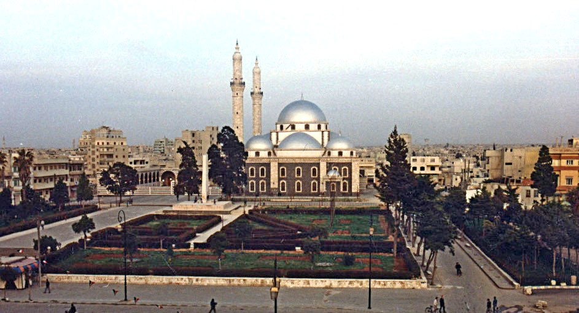
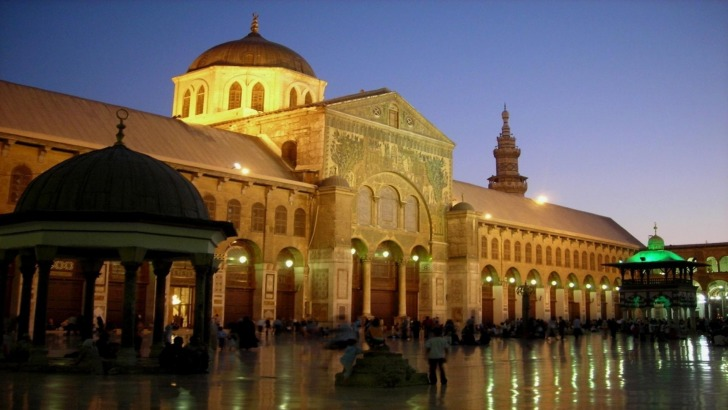

Ibn Al-nafis was a muslim arabic polymath, he was a phsician and a scientist in phsyiology as well as a writer and an islamic jurisprudence who was born in a village next to Homs called "Al Qurashyah," in syria. He was the fisrt person in history to discover the pulmonary circulation,and was able to describe it thoroughly after he had studied the path of blood in the vessels and its flow through the body.After this dicovery he confirmed that the lungs are responsible for the purification of blood and beleived that all blood that reached the left ventricle passed through the lungs.
Ibn Al-nafis corrected many scientists like the Greek physician Claudius Galenus who believed that blood was phushed inside the vessels by the attraction from peripheral tissues in need of nutrition (he did not recognize the pumping action of the heart) he also believed that both the veins and arteries carry blood to the extremities ets.....
Ibn Al-nafis wrote many books, but the most famous one was "Sharah al Tashreeh al Qanoon" which is translated to (COMMENTARY ON THE ANATOMY OF THE CANON OF AVICENNA). This book was forgotten until 1924 when an Egyptian physician, Dr M. Altatawi discovered manuscript No.62243 titled "COMMENTARY ON THE ANATOMY OF THE CANON OF AVICENNA" in the prussian state library in Berlin, Germany. This book contains the first discription of the pulmonary circulation.

| Date of birth | 1213 | ||
|---|---|---|---|
| Country of birth | Al Qurashya,Syria,Homs. |  | |
| His profession | Physician, Physiologist, islamic jurisprudent (faqih), philosopher and a novelist. | ||
| where did he go to start his career in medicine | Damascus |  | |
| death date | December 17 1288 | ||
| country he died in | Cairo, Egypt. |